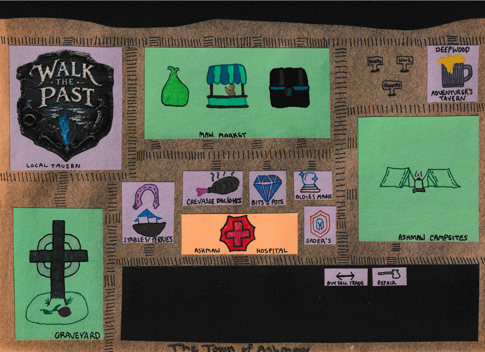

Life in Ashmaw
Ashmaw is harsh environment to survive as it is mostly just a barren muddy mess. It is quite wet throughout the year making the mud into a slush. So they get a lot of their food and water through caravans
that come through the Maw Market. The locals do their best to provide for the immediate town and utilize the adventuring nature of the Crevasse to sell trinkets, wares, and junk to supply the money for the
rest of what they may need. The adventuring groups that come and go aren't the greatest part of Ashmaw as they are often times routy and very greedy when it comes to the Crevasse. Many disappear or die when
they try to dive into the depths without proper knowledge or equipment.
Ashmaw is well known for mineral, metals, and artifacts that are brought up from the depths. They sell a lot of gemstones to the Magic Dealers that come through and plenty of souvenirs with the visiting population.
There are plenty of places to buy, sell, and trade the rewards from the depths of the Crevasse. The locals are very kind and generous people and if you carry your weight and show your character, you can grow
into becoming a local yourself.
Magic specifically Necromancy does have a place in Ashmaw. The Graveyard is by far one of the largest locations in Ashmaw as many a souls have departed this life here in Ashmaw. The locals will use this to there
advantage to make ends meet, prepare for hard times, and secure the supplies and resources that they need.
Places in Ashmaw
Deepwood Adventurer's Tavern
Owners: Mott Deepwood
Ashmaw Campsites
Ashmaw Junkyard
Buy, Sell, and Trade (Inside Junkyard)
Repair (Inside Junkyard)
Maw Market
Walk the Past Tavern
Owners: Milliecent and Curra Geon
Ashmaw Graveyard
Stables and Ferries
Crevasse Delights
Owners: Arma and Percival Delight
Bits and Pots
Owner: Gaten Austenwild
Oldie's Magic
Owner: Fredrick 'Oldie' Oldan
Sader's General
Owner: Sader Ben
Ashmaw Hospital
Interactive Map

Locals of Ashmaw
The Delights


The Bens


The Deepwoods


The Geons


The Austenwilds


The Brinders


Clara Rosen